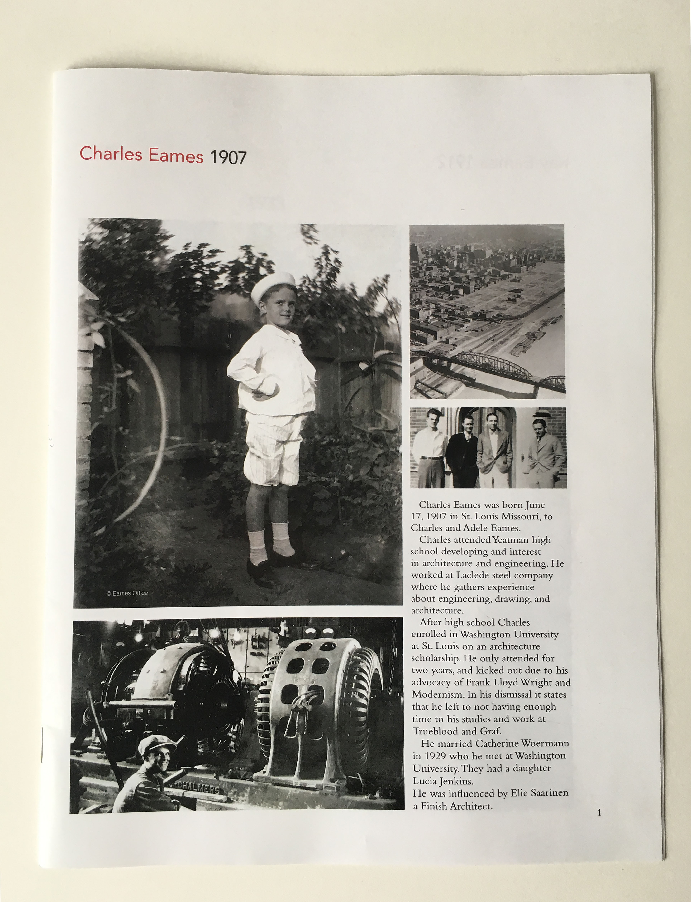
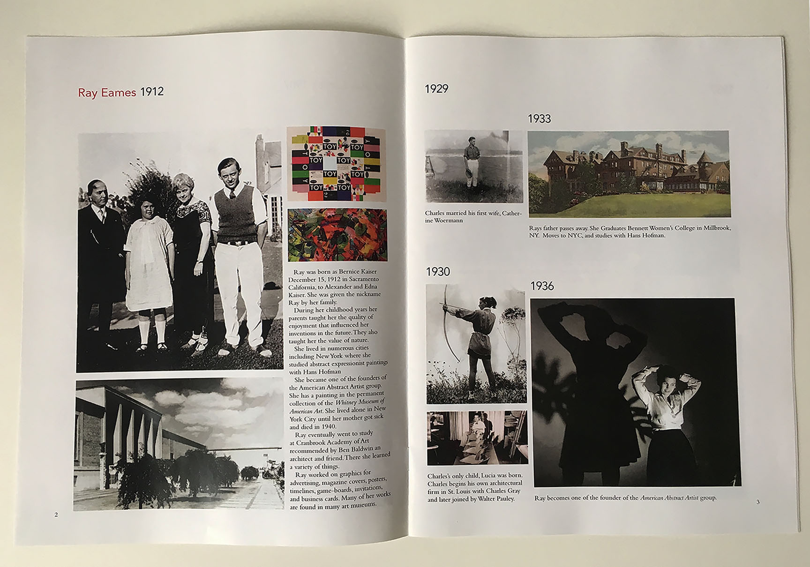
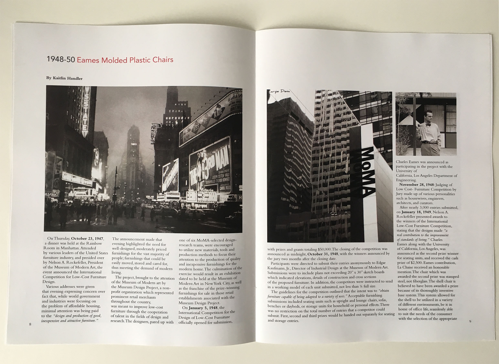
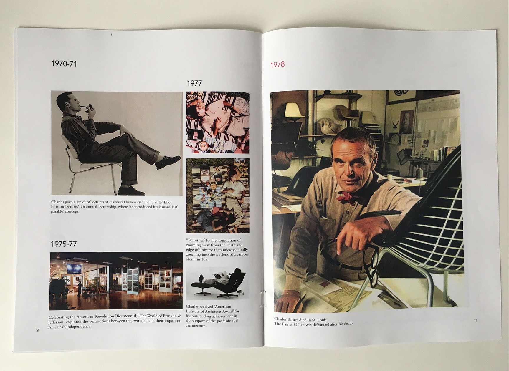
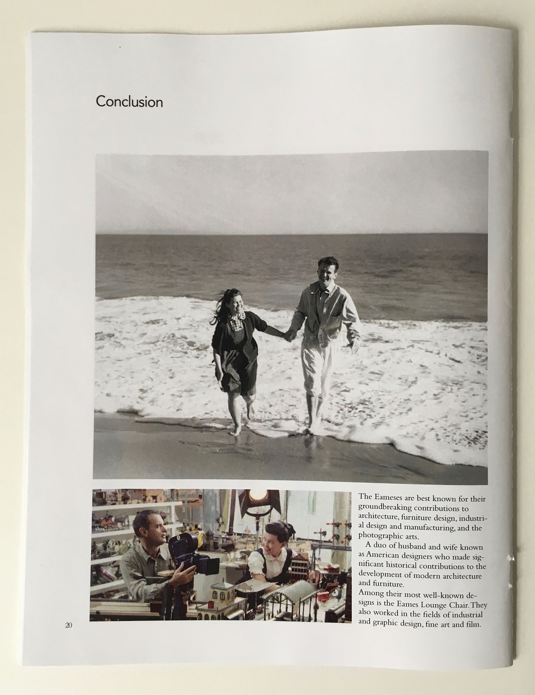

Eames Magazine





Using The Eames as an inspiration, I decided to create a gallery walkthrough of their lives. It starts with Charles Eames birth date and ends with their death date, and a conclusion of their legacy. Part of their history is the importance of how they met, and how they came together and contributed to art history. That is why I chose a timeline method to represent the information.